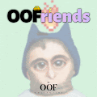 OOFriends by OOF Collective OOFriends 是 1665 个代币的集合，用于庆祝 OOF 集体中的艺术家！ 我们收藏了 20 位独特的艺术家，我们的实用性在 degen 空间中是任何人都无法比拟的！ 在这里查看艺术家展示 -
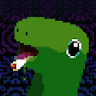 OOGA Posters 成为 OOGA 大家庭的一员的众多好处之一。 令人惊叹的像素艺术作品，全部由 Aftermelon 像素化，并在我们的直播期间收到我们社区的意见：OOGA 海报与我们不断发展的
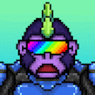 OogaVerse MekaApes 游戏现已推出！！每个婴儿 Ooga 和孵化器都可以领取一次 MekaApe！ 看看 Baby Ooga 是否已经在这里认领了 MekaApe！加入我们的 Discord 以了解更多信息。O
Oops I Did It 1000个mfer因为牛市没有回来而切断了他们的垃圾 Oops I Did It NFT - 常见问题（FAQ） ▶ 什么是Oops I Did It？ Oops I Did It是一个 NFT（不可替代
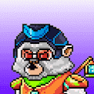 Oozaru From Universe 7 来自第 7 宇宙的 Oozaru - 收集了 7,979 只 ōzaru（大猴子），以 ERC-721 代币的形式存储在第 7 宇宙中。Ōzaru 可以在满月日变身为巨猿，以极大地增强它们的强大力
OpenBlox NFT Badge 欢迎来到 OpenSOpenBlox NFT 徽章 NFT - 常见问题（FAQ） ▶ 什么是 OpenBlox NFT 徽章？ OpenBlox NFT 徽章是一个 NFT（不可替代令牌）集合。存储在区块链上的数字艺术品集合。 ▶ 存在多少
OpenBlox V3 OpenBlox 是一个基于 EVM 的 NFT 游戏平台，专注于 Play and Earn 和 IP 品牌推广，它在 OpenBlox 世界的所有游戏中利用一组 Blox NFT 和代币。OpenBlox 的核心是基于 7,998 个创世 blox NFT
openGalaxy Stars 每一个星系都是一个有思想、有感情和有朋友的生物。 恒星可以承载行星，并以其稀有性和在开放星系中的位置以及它们独特的物理特性和能力而著称。 openGalaxy Stars NFT
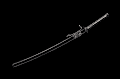 OpenSamurai Open Samurai 是随机生成并存储在链上的武士装备。 故意省略统计信息、图像和其他功能以供其他人解释。 随意以任何你想要的方式使用 Open Samurai。 这是 Loot Project 的
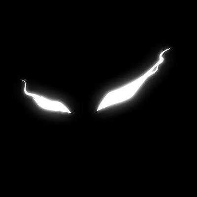 OperationSIN Official 我们必须使这次行动成功，我们的命运取决于它 OperationSIN Official 官方 NFT 在过去 7 天内售出 139 次。OperationSIN Official 的总销售额为 1.24 万美元。一份 OperationSIN Offici
OPERATOR GRUNTZ OPERATOR GRUNTZ (OG) 系列是 GRUNTZ 社区精英成员的限量版系列，他们已经完成了他们之前的严格道路，以获得他们作为 OG 的精英地位。 该系列反映了军队的特种部队社区，代表了
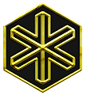 OptionRoom Genesis OptionRoom 第一代 NFT 用于 NFT 质押活动，考虑到尚未达到下一层的限制，每一层都可以通过在 NFT 本身之外燃烧一定数量的房间代币来升级以获得下一层。 NFT 让您可以访问独
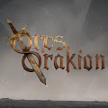 Orcs Of Orakion 1111 兽人寻找新的家园。 一个互动的 NFT 奇幻冒险，将故事讲述、有声读物制作和 Pen & Paper 游戏元素结合到一种新的娱乐形式中！ 加入我们的 Discord 部落：https:/
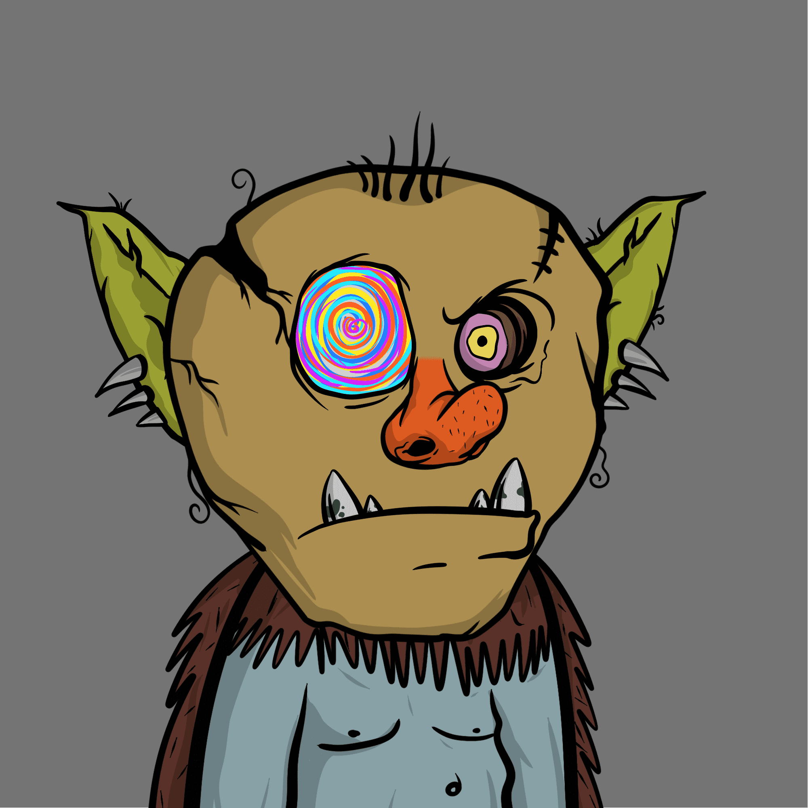 orcs.wtf orcs.wtf NFT - 常见问题（FAQ） ▶ 什么是 orcs.wtf？ orcs.wtf 是一个 NFT (Non-fungible token) 集合。存储在区块链上的数字艺术品集合。 ▶ 存在多少个 orcs.wtf 代币？ 总共有 3,327 个 orcs.wtf NFT
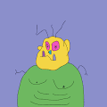 Orctown.wtf V2 Orctown.wtf V2 NFT - 常见问题（FAQ） ▶ 什么是 Orctown.wtf V2？ Orctown.wtf V2 是一个 NFT (Non-fungible token) 集合。存储在区块链上的数字艺术品集合。 ▶ 存在多少 Orctown.wtf V2 代币？ 总共有 6,666 个 Orctown.wtf V2 NFT。目
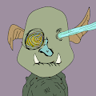 orctown.wtf. Stooopid GAWBLINz 是令人讨厌的老鼠，这不好。 丑陋的斑点小老鼠，我不代表他们。没有路线图。 没有不和谐。 没有实用性。 CC0。 兽人镇.wtf。NFT - 常见问题（
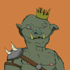 orcvillage.wtf ORc HaeV Big BODDDY GEhblin smoL.. 它是让 ORC 粉碎 Sum GoBLINNNS 并在 EtRUM BLOCKSHIN 上传播 Sum SHIett NEFTEE O ORC 的时间？ 哇！ SOOOOO MENY DJen 在这里滚出去！ 赞美皇后 EmbAR EUUUUURGHHHH orcvillage.wtf NFT - 常见问题（FAQ） ▶ 什么是 orcvil
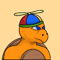 Ordinary Turts 我们只是一些普通的乌龟，与网络乌龟相比没有任何意义。 我们不隶属于他们，但我们钦佩他们。 ❤️ 我们只是一些普通的乌龟是一个由 333 个独特的 NFT 组成的集
Ordinary-Double bass 2014 欢迎来到 OpenSea 上的 Ordinary-Double bass 2014 之家。 发现这个系列中最好的项目。 普通帮派！NFT - 常见问题（FAQ） ▶ 什么是Ordinary-Double bass 2014！？
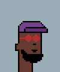 OrdinaryPunks 普通朋克是 5000 个朋克的集合，但普通！这个项目的灵感来自普通人和他们的朋克灵魂！ OrdinaryPunks NFT - 常见问题（FAQ）过去 7 天没有售出普通朋克。欢迎来到 OpenSea 的朋
ORGVSM Meta-Pass 一个项目：orgvsm。 Meta-Pass 有多种独特的实用工具。 它们允许其所有者在短期和长期内获得经济、社会和艺术优势。 ORGVSM Meta-Pass NFT 在过去 7 天内售出 1 次。ORGV
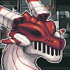 OrientalDragonz OrientalDragonz NFT - 常见问题(FAQ) ▶ 什么是OrientalDragonz？ OrientalDragonz 是一个 NFT (Non-fungible token) 集合。存储在区块链上的数字艺术品集合。 ▶ 有多少Oriental
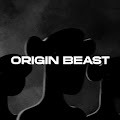 Origin Beaste 预售实况官方账号认证 OpenSea™NFT 网站 | 不和谐 | Instagram | Twitter NFTThe Origin Beast 是一个以社区为重点的衍生 NFT 集合，包含 9,999 个稀有 Nft。 每个 NFT 都是使用 140 多种
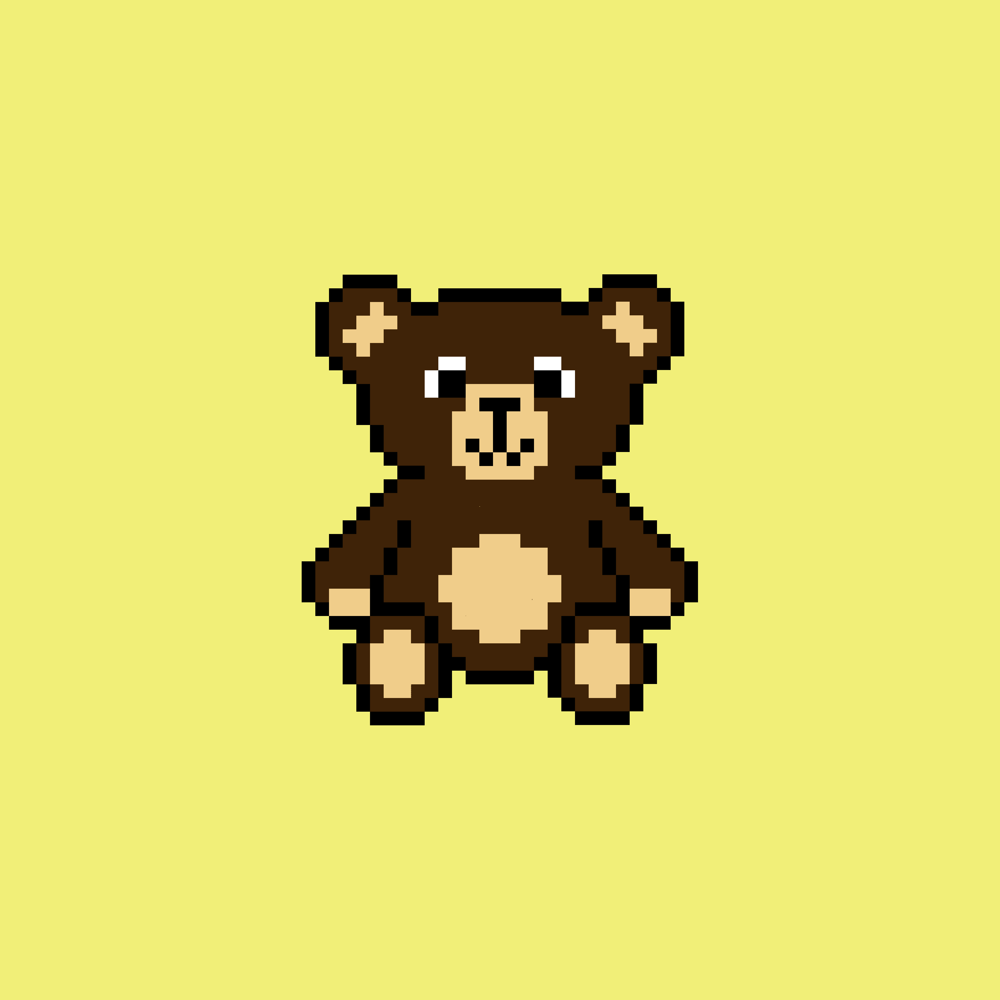 Original Crypto Cubs 我们很自豪地展示令人惊叹的 Crypto Cubs 收藏！ 这些可爱的幼崽是在团队的爱下以数字方式手工制作的，一定有一天会成为一个优秀的收藏品。 不要错过，今天就拥有
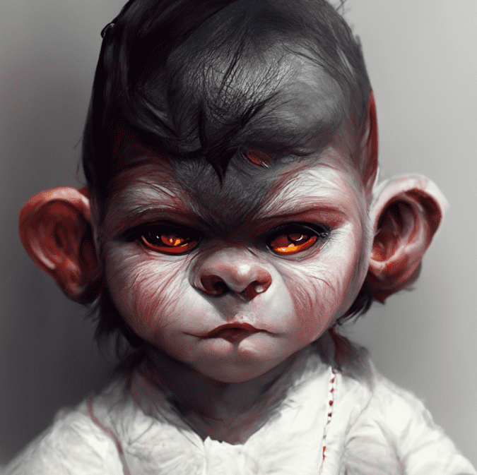 Original Real Baby Apes Lil Baby Ape Club NFT 在过去 7 天内售出 12 次。Lil Baby Ape Club 的总销售额为 735.8 美元。一个 Lil Baby Ape Club NFT 的平均价格为 61.3 美元。有 2,277 名 Lil Baby Ape Club 所有者，拥有总供应量 5,000 个代币
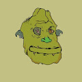 orktownwtf orktownwtf 是令人讨厌的老鼠，这不好。丑陋的斑点小老鼠，我不代表他们。 没有路线图。没有不和谐。没有实用性。CC0。 orktownwtf NFT - 常见问题（FAQ） ▶ 什么是 or
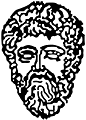 ORSTGenesis Genesis 仅包含 64 件独特的作品，每件都是预先铸造的。 每件作品都附有可在 Oratio Street 网站 (oratiostreet.com) 上领取的实物可兑换作品。 Oratio Street Corp 受到古希腊文明的启发，向那个时代的伟大
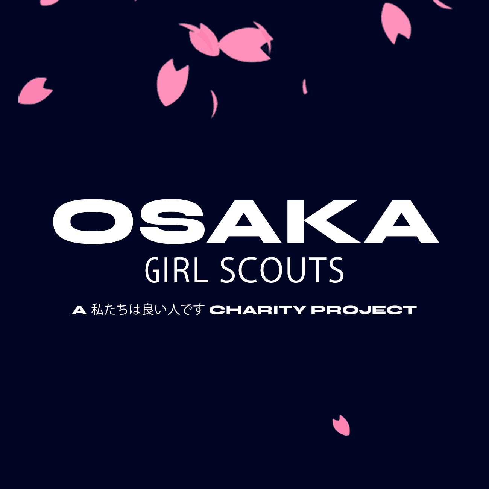 OSAKA GIRL SCOUTS 2222 大阪女童子军💕 A We are good people Charity Project. 30 分钟内完成💐 50 % 的特许权使用费捐给慈善机构 OSAKA GIRL SCOUTS NFT - 常见问题（FAQ） ▶ 什么是大阪女童子军？ OSAKA GIRL SCOUTS 是一个 NF
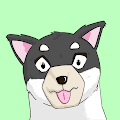 Osareum Metaverse Osaru 有时会为他最喜欢的项目画同人画。 这只是它的存储库。在过去的 7 天内没有出售任何 Osareum。 有史以来第一个 B&W NFT。专为经验丰富的 NFT 爱好
OshareNFT 有史以来第一个 B&W NFT。 专为经验丰富的 NFT 爱好者和 NFT 领域的新手而设计。在过去的 7 天内没有出售任何 Osareum。 OshareNFT 有时会为他最喜欢的项目画同人
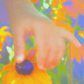 oshi's music oshi 的音乐 NFT 在过去 7 天内售出 1 次。oshi 的音乐总销售额为 337.04 美元。一个 oshi 的音乐 NFT 的平均价格是 337 美元。有 67 名 oshi 的音乐所有者，总共拥有 105 个代币。 大
Osiris Cosmic Kids Cosmic Kids 是自由、快乐、精神的集合体，是元界奥西里斯 (Osiris) 的可玩化身。 Osiris 是一个动态的 2D 虚拟世界。 要访问 Osiris，首先要获取 Cosmic Kid，这是以太坊上独
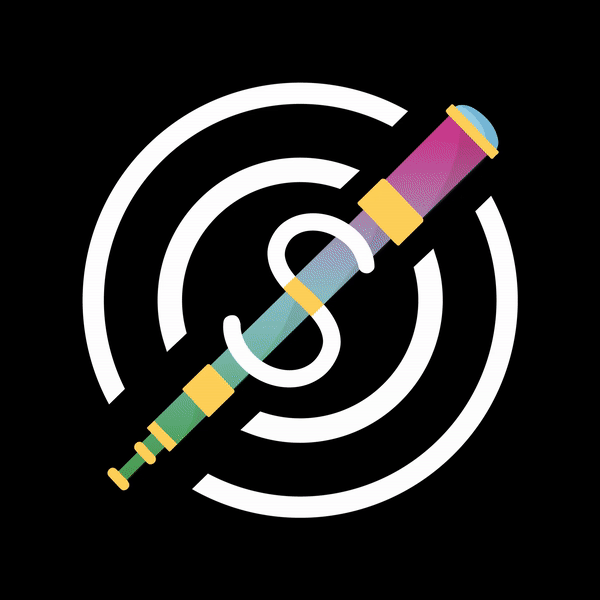 oSnipe Genesis Pass oSnipe Genesis Pass NFT 在过去 7 天内售出 42 次。oSnipe Genesis Pass 的总销售额为 12.99 万美元。一个 oSnipe Genesis Pass NFT 的平均价格为 309.4 美元。有 842 名 NFTinit 终身所有者，总共拥有 1,120 个代币。 oSnipe
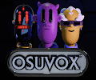 Osuvox Metaverse Avatars ✅ 官方 OSUVOX 头像收藏。⭐ 要铸造您自己的 OSUVOX，请前往 OSUVOX Minter。ℹ️ 有关 OSUVOX 及其 Metaverse 的更多信息，请加入我们非凡的 Discord 社区或访问我们的网站。 OSUVOX
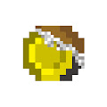 Otaku Coin NFT Otaku Coin Association 的官方 NFT。Otaku Coin 协会，包括其前身 Otaku Coin 筹备委员会，自 2017 年 12 月以来一直致力于日本动漫文化的发展。我们的目标是在内部推广、介绍和熟
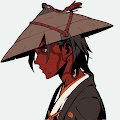 Other Zuki 前 333 个免费，总共 3333 个。价格 0.015 ETH / Gas 优化 ✅。 薄荷在这里：https://otherzuki.com。 不隶属于其他项目 其他 Zuki NFT - 常见问题（FAQ
Otherdeed For Moonbirds Kid 只是您友好的邻居 Otherdeed Moonbirds Kid。 不是来改变世界，只是让你的投资组合多样化。 在过去的 7 天内没有售出 Otherdeed For Moonbirds Kid。 Moonbirds Kid NFT 的其他行为 - 常见问题 (FAQ) ▶ Moonbirds Kid
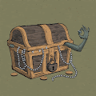 othergoblinz.wtf othergoblinz.wtf NFT - 常见问题（FAQ） ▶ 什么是其他地精.wtf？ othergoblinz.wtf 是一个 NFT (Non-fungible token) 集合。存储在区块链上的数字艺术品集合。 ▶ 还有多少其他goblinz.wtf 代
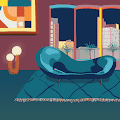 otherhomes 欢迎回家。 otherhomes 是 1,111 个随机生成的生活空间的集合。 拥有一个 HOME 不仅意味着在 web3 领域拥有一个安全的空间，而且还有助于为无家可归的人提供一个安全的空间 IR
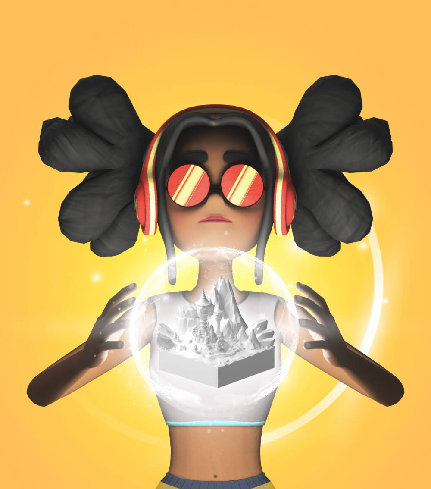 OTHERLAND PASS by LanDAO 把那块土地放进罐子里！ OTHERLAND Pass 是 LanDAO 生态系统的独家会员，一旦 LanDAO 平台上线，这将是一个关键因素…… OTHERLAND PASS by LanDAO生态系
Othershouse.xyz MintPass https://othershouse.xyz/ 是一个用于改进 Otherside 的创世集合。 他们每个人都有独特的升级和增强组合 - 一些用于资源，一些用于强大的工件。 Koda 在其中的一些地方安顿下来。 Othershouse.xyz MintPass NFT - 常见
OTOmotors OTO Motors 是为收藏家和游戏玩家创建的 NFT OTOmobiles 平台。 每个 OTOmobile 都是在以太坊网络上以数字方式注册的 ERC-721 标准 NFT。 OTOmobiles 的所有者可以不断升级其资产的性能、注册功能和


 的可玩化身。")